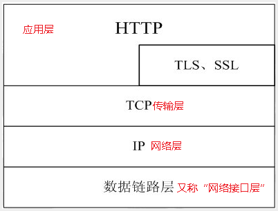
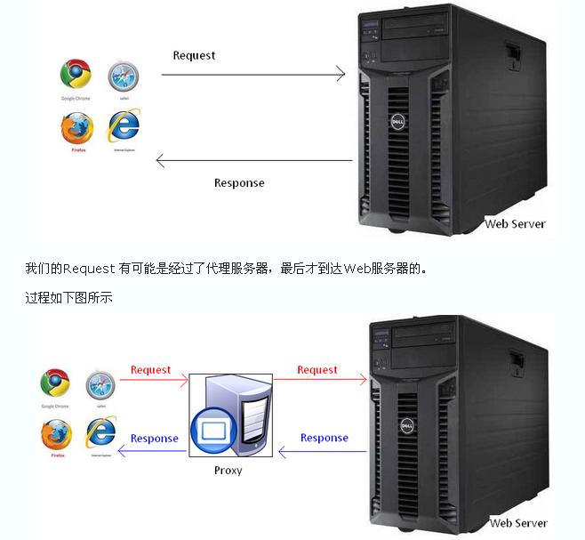
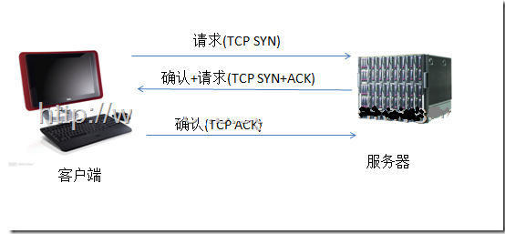

http协议 超文本（html文档）传输协议。 其实就是两台计算机通信的一个规则，就跟咱们写接口时的约定一样。 
1、客户/服务器模式：客户端发起，服务器响应 2、简单快速：只需要请求方法和路径，服务器的规模小，速度快 3、灵活：允许传输任意类型数据 4、无状态：服务器不会记录上一次传输的任何状态信息
1、建立连接：点击某个链接 2、客户端发送请求给服务器：方法 路径 协议版本 header头信息 请求数据 3、服务器响应：状态行：协议版本 状态码 服务消息 响应头 响应数据 4、客户端收到消息，通过浏览器显示，并关闭连接 
http是基于传输层TCP协议，TCP是端到端的面向连接的协议，在http开始传输之前，先要建立TCP连接 TCP连接就需要进行 三次握手 